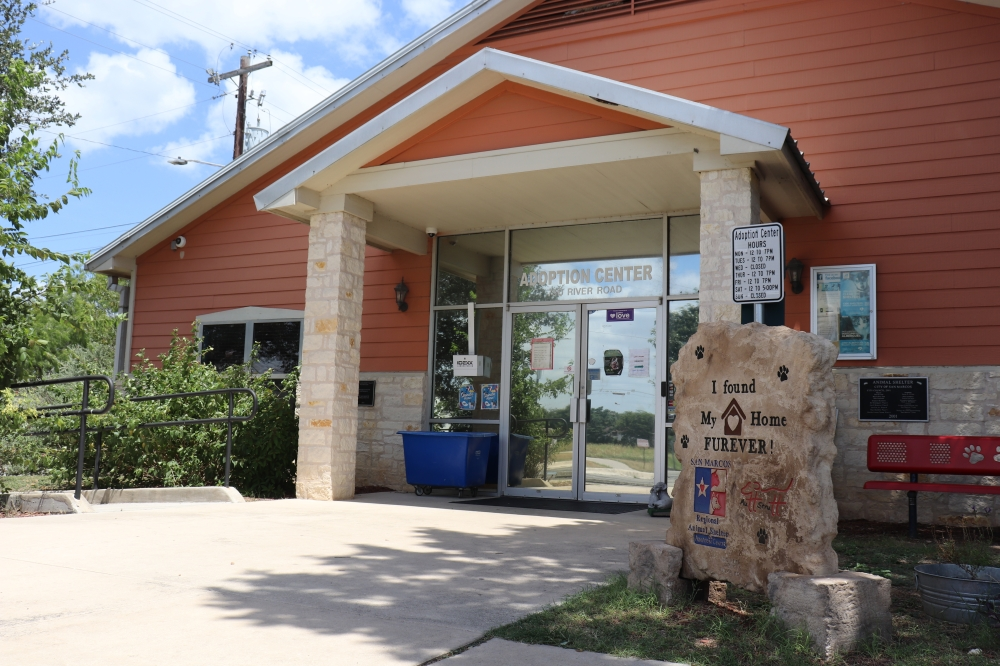
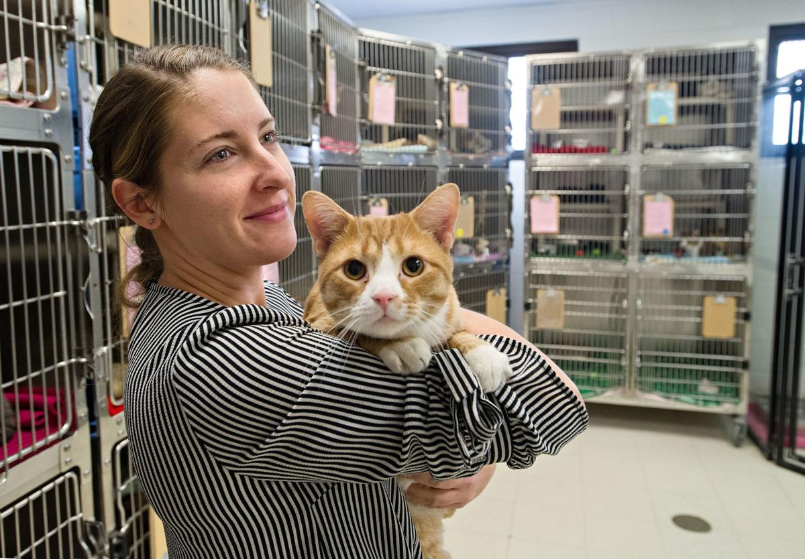

San Marcos Animal Services is dedicated to protecting the pets and people of the City of San Marcos. Our mission is to care for, protect and find quality homes for abandoned and neglected animals, aid in the reduction of pet overpopulation, and provide community education for the mutual benefit of animals and people.
The City of San Marcos Regional Animal Shelter is the stray animal open-intake facility for all of Hays County. This means we accept lost and owner surrendered animals from all cities within Hays County.
To adopt, please email Animal Adoptions or call 512-805-2657 during the shelter's open hours.


| ADOPTION CENTER HOURS | RECEIVING/RECLAIM HOURS |
|---|---|
| Mon 12:00 pm to 7:00 pm | Mon 8:00 am to 6:00 pm |
| Tues 12:00 pm to 7:00 pm | Tues 8:00 am to 6:00 pm |
| Wed 12:00 pm to 7:00 pm | Wed 8:00 am to 6:00 pm |
| Thur 12:00 pm to 7:00 pm | Thur 8:00 am to 6:00 pm |
| Fri 12:00 pm to 7:00 pm | Fri 8:00 am to 6:00 pm |
| Sat 12:00 pm to 5:00 pm | Sat CLOSED |
| Sun CLOSED | Sun CLOSED |